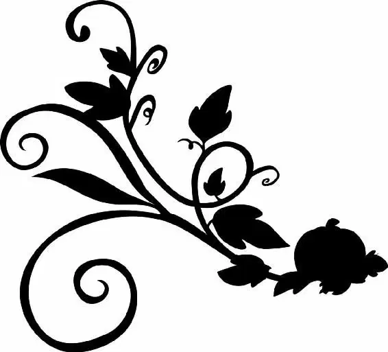

Six years passed, and true to her word, Ella stayed kind and courageous. She continued to make sure the littlest birds got just as much food as the big birds at the fountain. She made sure to say good morning and good evening to the cooks and maids of the house. When she had to make trips to the market, she smiled at everyone she passed. Always she felt her mother’s presence, reminding her of the promise she had made all those years earlier.
One morning, Ella read aloud from a book in the drawing room. Her father sat in a chair opposite her, nibbling on a piece of toast slathered in honey.
Looking up, Ella smiled. She had harvested that honey especially for her father. It was his favorite treat, and the little things meant so much these days. The smile faltered a bit as she noticed the dust that had accumulated on the mantel and the curtains. Since her mother’s death, the house had lost some of its sparkle.
Now, now, Ella thought. Times are not so bad. Father is here and we have a roof above our heads. And we have each other.
With a resolved nod, she returned her attention to the book and read the final paragraph aloud: “‘And thence home, and my wife and I singing, to our great content, and if ever there were a man happier in his fortunes, I know him not.’ ” Closing the book gently, she looked at her father. “Thus ends Mr. Pepys. I do love a happy ending, don’t you?”
Ella’s father nodded. “They are quite my favorite sort.”
“As well they should be,” Ella said. She paused before adding, “I suppose it would be selfish to ask for happy beginnings and middles as well.”
Silence filled the room. Both father and daughter were lost in thoughts of Mother.
“No,” her father finally answered, breaking the silence. “I do not think that would be selfish.” He paused before going on. “Ella, I have come to the conclusion that perhaps I may begin a new Chapter .”
Ella had been waiting for this day and knew immediately what he meant. Her father was a handsome and still rather young man. It did not make sense for him to spend the rest of his years alone. Still, her stomach fluttered uncomfortably at the thought of someone new in her life.
Ella turned her attention back to her father. “You recall that some time ago in my travels,” he was saying, “I made the acquaintance of Sir Francis Tremaine?”
Ella nodded. “Yes. The master of the mercers’ guild, is he not?”
“Was,” her father corrected. “The poor man has died, alas.”
“I am grieved to hear it, Father,” Ella said, her voice filled with genuine sadness.
Her father looked down at his hands, which he was clenching and unclenching nervously. Then he raised his head, and his eyes met Ella’s. “His widow, an honorable woman, finds herself alone, though still in the prime of her life.”
Ella’s gaze softened. She knew this was hard for her father to say. “You’re worried about telling,” she said gently. “But you mustn’t… Not if it will lead to your happiness.”
“Happiness . . .” he repeated. “Do you think I may have another chance, even though I thought such things were done with?”
Ella did not hesitate. “I do, Father.”
A relieved smile broke over her father’s face. “She would merely be your stepmother,” he went on. “And you would have two lovely sisters to keep you company. So I will know, as far away as I may be, that you are safe at home, cherished and protected.”
Ella stood up and hugged her father tightly. This was bound to be a big change. But perhaps there was a silver lining. She would have sisters—real sisters who could become real friends—and a stepmother, who might, in time, become like a real mother. . .
Within a fortnight the plans of marriage had been made and the ceremony performed. Soon after, Ella found herself standing in front of her house waiting for the arrival of her new stepmother and stepsisters. Her father stood beside her, with a cautiously hopeful look on his face.
Ella wrung her hands. She had spent the past few days helping the staff clean the house. As Ella had looked around the home earlier that morning, she couldn’t help missing her mother. Mother had loved seeing the home gleam after a fresh tidying.
The house was not the only thing to receive special attention. Ella wore her best dress, its blue complementing her eyes. Her blond hair had been brushed until it shined and then pulled back gently. Now, standing in front of the house, she hoped that she, too, would look fine through fresh eyes.
The distinct clip-clop of hooves echoed down the drive, and within moments a carriage pulled up in front of the manse. Two coachmen jumped to the ground and opened the door.
Ella’s breath caught in her throat. This was it. Pasting a smile on her face, she waited for the first glimpse of her new stepmother.
Lady Tremaine’s foot appeared in the door, beautiful in an ornate shoe. A moment later, Lady Tremaine’s hand appeared and took one of the coachmen’s hands. Then, with practiced grace, she stepped out of the carriage and onto the drive.
She was one of the most beautiful women Ella had ever seen. Her skin was radiant and soft, her strawberry-blond hair piled atop her head in a fashionable coif . Her dress, clearly the latest fashion, was cinched tight at her tiny waist, and the jewels at her throat made her eyes sparkle.
Ella’s father offered his hand to his new bride. “My daughter, Ella,” he said by way of introduction.
Ella curtsied. She was rewarded with a large smile from Lady Tremaine. “Please, Ella,” the lady said sweetly, “let us treat each other like family.” Then she motioned to the carriage. “These are your sisters, Drisella and Anastasia.”
There was a small commotion and the carriage rocked gently on its wheels. Then out stepped two young ladies. The eldest, Anastasia, was pretty, with dark hair and porcelain skin. Her sister, Drisella, had red hair and was slightly smaller in stature. Catching sight of Ella, Drisella looked her up and down, apparently not impressed. She whispered something into Anastasia’s ear.
“Have courage, be kind,” Ella muttered to herself. It would do no good to start off on the wrong foot. Smiling, Ella said, “How do you do? I hope you will all be happy here.”
“What manners,” Lady Tremaine said approvingly. She turned and gave a knowing look to her daughters.
Taking the hint, Anastasia and Drisella began to bombard Ella with hollow compliments. “You’re very nice,” Drisella said.
“And you have such pretty hair,” said Anastasia.
Drisella nodded. “You should have it styled,” she added.
The insult was not lost on Ella. Still, she refused to react. Perhaps the girls were just cranky from their journey. She continued her welcome. “Would you like a tour of the house?” Ella asked.
“What did she say?” Drisella asked her sister. “Her accent is so twangy .”
“She wants to show us her farmhouse,” Anastasia replied. “She’s proud of it, I think.”
Lady Tremaine cleared her throat, then addressed Anastasia and Drisella. “Dears,” she said, her tone warning, “I do hope you won’t fuss.”
Her daughters snapped to attention. They were not used to being chastised by their mother. She usually let them get their way. But now she was telling them to be nice to their new country bumpkin of a sister. With a sigh, they followed Ella toward the farmhouse.
As they entered, Lady Tremaine turned to Ella’s father. “You did not say that your daughter was so beautiful,” she said. It had been impossible to ignore. Compared to her own daughters, Ella had a grace and beauty that made them seem dull and mindless.
“She takes after her…” Ella’s father began, but stopped himself.
Lady Tremaine finished the sentence. “Her mother,” she said, nodding. “Just so. You must not be afraid to say it. Not to me.”
A relieved smile spread across his face as Lady Tremaine put a hand on his arm. But as her new husband began to give her a tour of her new home, Lady Tremaine frowned. She would have to keep an eye on Ella. The girl could prove to be trouble if she was a constant reminder to her father of the wife he had lost.
